IO642 Usage Notes v2 — Usage information about the I/O module
This section provides further information about how to configure the IO642 PROFIBUS Slave module.
To set up PROFIBUS communication, you must import the device description files of the PROFIBUS slaves (GSD file) into your PROFIBUS Master configuration tool or PLC programming tool (refer to Step 7). The GSD file tells the master about device identification, cyclic data modules, parameters, acyclic data and the services the particular slave supports. When the connection is being established, the master sends configuration requests which the slave must compare with its internal configuration in order to accept or reject the connection. There are different types of slave devices:
slaves with a fixed module configuration
slaves where the final configuration depends on pluggable modules
slaves which are freely configurable
The IO642 I/O module belongs to the last group. You can use the IO642 in two modes
the I/O module acts as the default device
the I/O module emulates a device of a different vendor
Find the default GSD file here:
>> [speedgoatroot, '\sg_blocks\cifx\eds\HIL_0B69.gsd'].
If you want to emulate a PROFIBUS slave of a different vendor, you generally find the GSD file on the vendor's website.
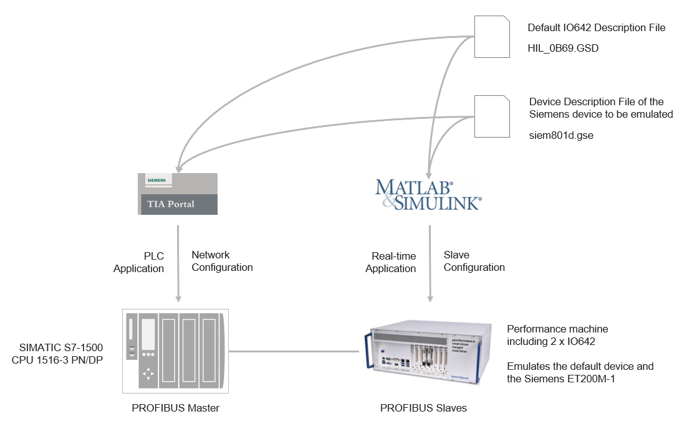
The network contains a Siemens PLC acting as a master and a Speedgoat Performance real-time target machine with two IO642 PROFIBUS Slave modules. Slave 1 is configured as the default device. Slave 2 emulates a Siemens ET 200M-1. In a real plant, such a device is referred to as a bus coupler with a backplane bus where the user can plug hardware modules like analog and digital modules whose data is mapped to the PROFIBUS network.
The Siemens software TIA Portal is used to configure and program the PLC.
In the TIA portal, click Options --> Manage General Station Description Files (GSD). Navigate to the folder where the GSD files of both slaves are stored. Select both rows and click Install.
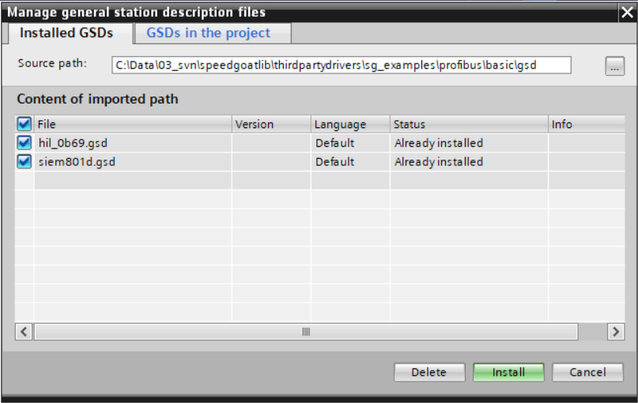
In the project tree right-click the PLC node and select Open. The Hardware Configuration opens.
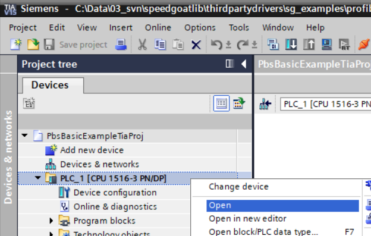
Switch to the Network view and open the Hardware catalog.
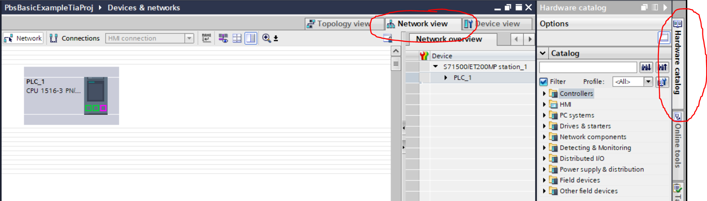
Drag both slave nodes from the hardware catalog to the network canvas. Connect the PROFIBUS port of each slave with the port of the master.
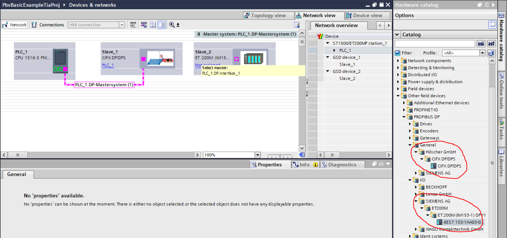
Right-click the connection line and select Properties. Adjust the PROFIBUS timing if necessary.
Select a slave and switch to the Device view. Open the Properties window and enter the correct PROFIBUS address. Drag and drop the desired I/O data modules from the hardware catalog to the module table of the slave. This table shows the structured content of the payload of the cyclic frames the master exchanges with the slave. When the connection is being established, the PROFIBUS master sends this information to the slave and the slave checks if the module configuration matches the expected configuration. The Speedgoat IO642 PROFIBUS slave is special because it always accepts the module configuration and updates its internal registers.
Furthermore, the module table helps you to calculate the overall length of I/O data of a slave. You need this information to configure the input and output data length of the IO642 send and receive blocks.
Slave_1
Input length (RX Master, TX Slave): 16 bytes
Output length (TX Master, RX Slave): 16 bytes
Slave_2
Input length (RX Master, TX Slave): 9 bytes
Output length (TX Master, RX Slave): 5 bytes
Furthermore the module table shows the addresses of the I/O data modules within the memory of the PLC. You need this information to define variables for your PLC program.
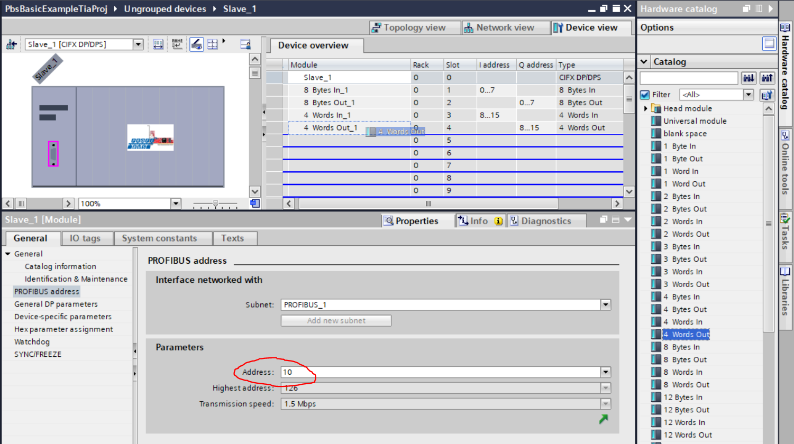 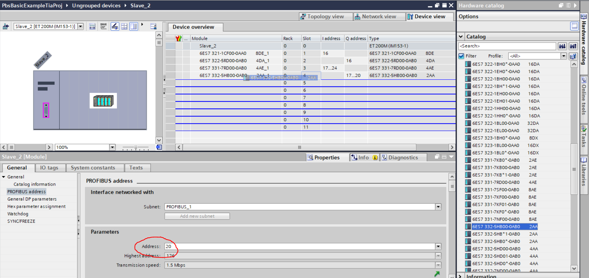
In the project tree right-click PLC tags and add a new tag table. Define variables which point to the addresses of the PROFIBUS slave I/O modules.
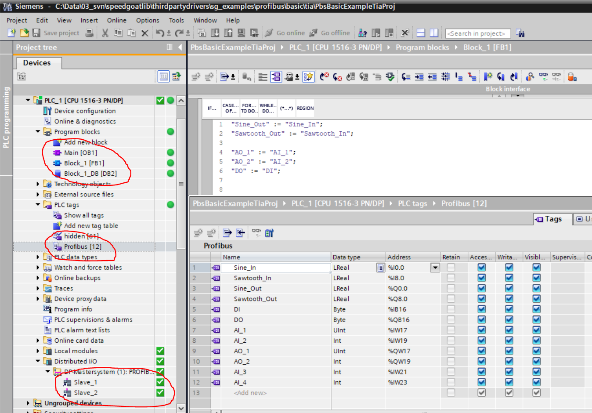
Finally, write your application code. Manage the code in the project tree in the Program blocks folder. The PLC application of this example only sends back the data the master receives from the slaves.
In the project tree right-click the PLC node and use the compile and download commands to run the application on the PLC.
In the Distributed I/O folder you can check the connection status of the PROFIBUS slaves.
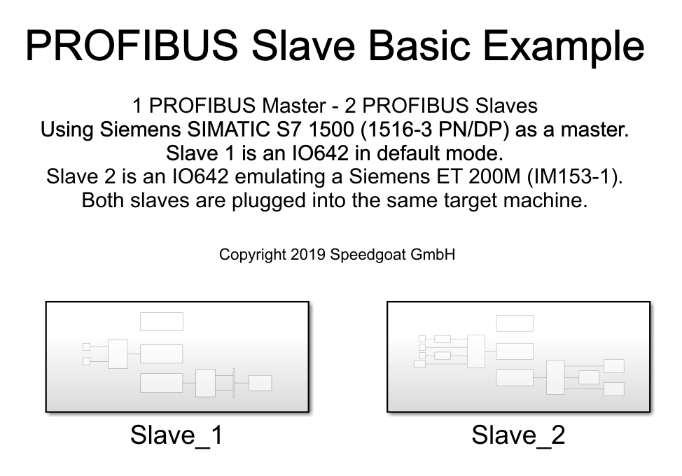
In the Simulink model you need one Setup, one Receive and one Send block for each Slave respectively. In each Setup block, import the related GSD file and set the correct PROFIBUS address (the same as in the TIA project).
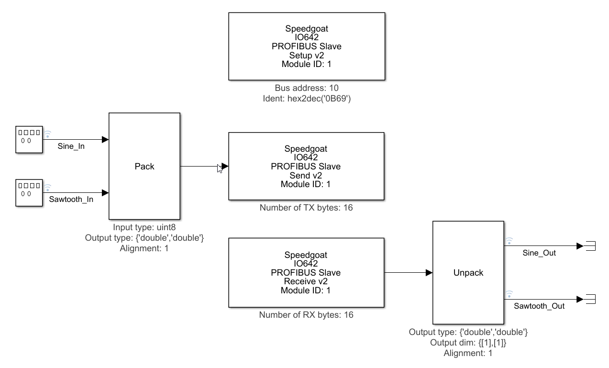
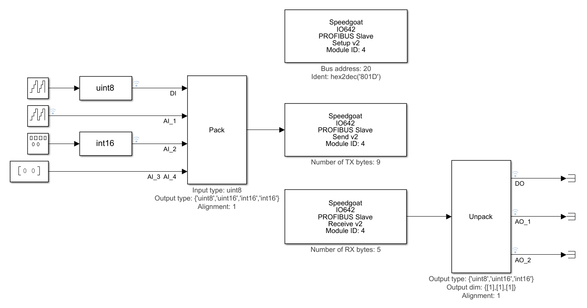
In the Send block enter the length of the data you would like to write to the TX buffer of the IO642 PROFIBUS slave module. In the Receive block enter the length of the data you would like to read from the RX buffer of the IO642 PROFIBUS slave module. Reading and writing is performed in relation to the parameter Sample time. The bus cycle time specified in TIA must not match the Sample time in the Send and Receive blocks. The IO642 has an internal triple buffer which guarantees consistent data exchange between the protocol side and the application side running at different rates.
The IO643-32 simulates 32 PROFIBUS Slave nodes. Each node has two LEDs that indicate the communication status.
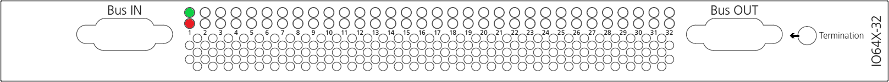
| LED | Color | State | Meaning |
| SYS | Green | On | Operating system running |
| Green/Yellow | Blinking | Second stage bootloader is waiting for firmware | |
| Yellow | On | Bootloader netX (= romloader) is waiting for second stage bootloader | |
| Off | Off | Power supply for the device is missing or hardware defect | |
| COM | Green | On | RUN, cyclic communication |
| Green | Flashing, cyclic (2 Hz) | Master is in CLEAR state | |
| Red | Flashing, acyclic (1 Hz) | Device is not configured | |
| Red | Flashing, cyclic (2 Hz) | STOP, no communication, connection error | |
| Red | On | Wrong configuration at PROFIBUS DP Slave | |
| Off | Off | Device is not switched on or power is missing. During firmware download process |
| LED | Color | State | Meaning |
| STATUS/COM1 | Green | On | RUN, cyclic communication |
| Green | Flashing, cyclic (2 Hz) | Master is in CLEAR state | |
| Off | Off |
LED ERROR is off: Device is not switched on or network power is missing LED ERROR is flashing or “on”: Refer to description LED ERROR | |
| ERROR/COM2 | Off | Off | Refer to description for LED STATUS |
| Red |
Flashing, acyclic (1 Hz) | Device is not configured | |
| Red | Flashing, cyclic (2 Hz) | STOP, no communication, connection error | |
| Red | On | Wrong configuration at PROFIBUS DP Slave |
For the list of status codes, please refer to Status Codes for Protocols Supported with the IO64x/IO75x Modules.